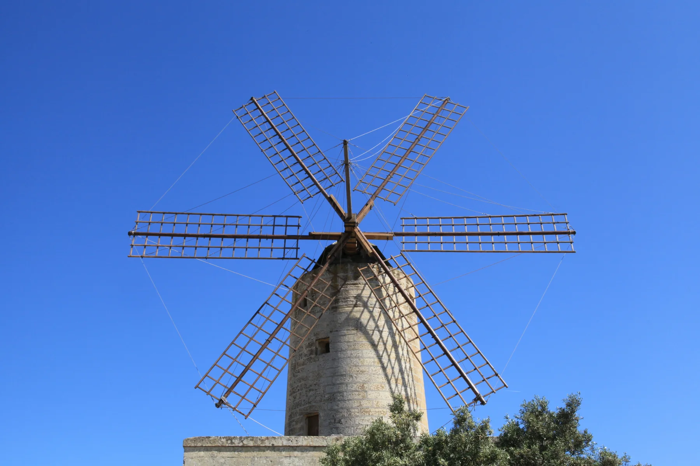

Use the central town as an orientation point, then verify the entrance, steps, vehicle access, light, noise and nearby services at the individual property.
ŻURRIEQ · READ THE EXACT ADDRESS
Town centre. Named edges.
Żurrieq is a southern town with its own centre and several distinct local contexts. Bubaqra, in-Nigret and Ħal Millieri belong in the story, but they should not be flattened into one interchangeable property location.

ONE TOWN, SEVERAL CONTEXTS
The listing address matters more than the label.
The Local Council distinguishes the main town from Bubaqra and in-Nigret and records Ħal Millieri as part of the locality's historic setting. Use those names to ask better viewing questions about the actual street, entrance and surroundings.
Bubaqra is a named context south of the main centre. Its tower adds historic texture, but it does not establish a property's view or access.
In-Nigret is identified separately by the council. A property carrying that location deserves its own street-level reading rather than a generic centre description.
The historic chapel area belongs to the wider Żurrieq story. It does not make every listing rural, walkable to the chapels or part of the same immediate setting.
A NAME CAN MISLEAD
Wied iż-Żurrieq is a Qrendi context.
Qrendi Local Council states that Wied iż-Żurrieq and the Blue Grotto lie within Qrendi's council limits despite the valley's name. This edition therefore does not use the coast, Blue Grotto, Ħaġar Qim or Mnajdra as proof that a Żurrieq-town home has coastal access or a short route.
Qrendi Local Council boundary source ↗VERIFIABLE EVERYDAY ANCHORS
Useful examples without a complete-directory claim.
These dated and operator-backed examples help explain daily life. They do not establish live opening hours, stock, service availability, accessibility or distance from a listing.
Community clinic
Primary HealthCare's current clinic directory lists Żurrieq Community Clinic at 105 Mattia Preti Street. Services and appointments vary, so confirm them directly before relying on a visit.
Official clinic directory ↗Maypole Żurrieq
Maypole's own outlet directory identifies its Żurrieq shop on Triq Bronja. The operator page is a useful address anchor, not a promise about live stock, delivery or permanent hours.
Operator source ↗Misraħ il-Karmelitani
A government release dated 20 May 2026 records the garden's inauguration with seating, planting, solar lighting and a rainwater reservoir. Current access and condition remain a day-of check.
Government source ↗LOCAL HERITAGE
Three anchors, three separate checks.
The council's records support a layered local history. They do not guarantee opening, internal access, demonstrations, events or a clear view from a home.
The windmill
The council dates Xarolla to 1724, records its restoration in 1992 and describes its use as a cultural centre under council administration.
The tower
Bubaqra Tower is a separate historic landmark in the named hamlet context. Its presence does not define every nearby street or property outlook.
The chapels
The chapel setting belongs to the locality's historic edge. Confirm access and arrangements from the responsible source before planning a visit.
A licensed address is not a restaurant review.
The Malta Tourism Authority register, last checked 17 October 2026, lists Alexandria Restaurant at 19 Triq Pietru Pawl Saydon, Żurrieq. This edition uses that record only as evidence of a licensed local address. It makes no claim about cuisine, quality, opening times, booking availability or continued operation after the check.
No overview line becomes a journey.
This edition draws no municipal boundary, straight-line shortcut, generic walking route, road ETA, bus schedule or coast connection. Walking geometry, public transport, current car traffic and taxi prices remain separate sources requiring exact endpoints, mode and time.
Load the town overview only when you need it.
The map keeps the town, Bubaqra, in-Nigret, Ħal Millieri and the Xarolla direction in one inland orientation frame. It deliberately excludes the Qrendi coast and draws no property route, administrative boundary or journey time. OpenStreetMap loads only after your click.
Żurrieq Local Council geography and history · Council historical places · Qrendi Local Council — Wied iż-Żurrieq · Primary HealthCare community clinics · Maypole Żurrieq · Misraħ il-Karmelitani release · MTA restaurant register · Wikimedia Commons image record

No ranking, fixed opening hours, property-specific route, guaranteed outlook, parking claim, accessibility promise, coastal proximity or journey time is claimed.